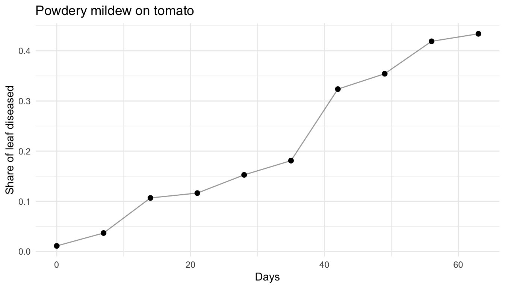
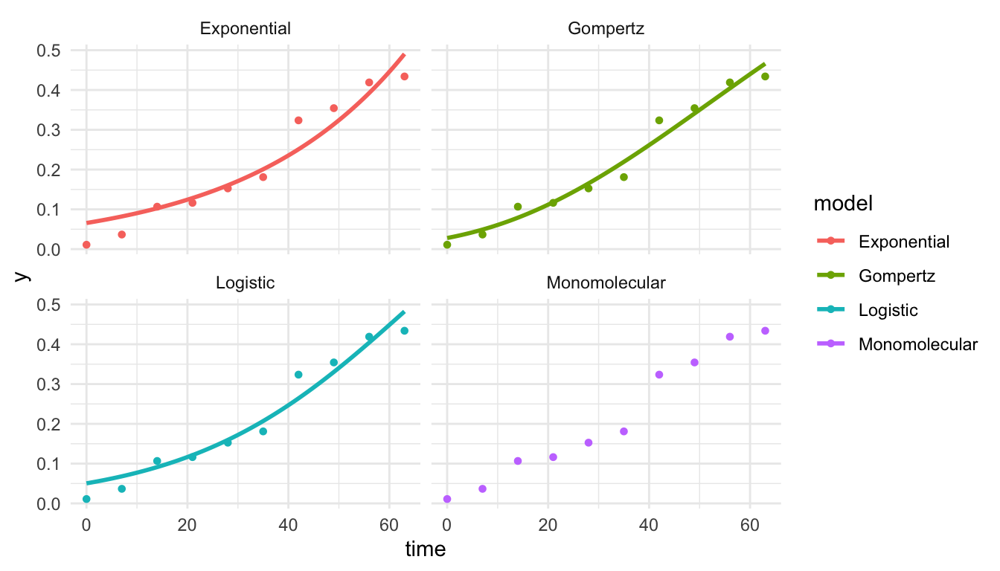

The S-shaped curve, and one test that catches wrong models
Why epidemics speed up and then slow down
Picture a field of 100 leaves where one is infected. Spores from that one leaf land on the 99 healthy ones, so new infections appear slowly at first. As more leaves become infected, there are more sources of spores and the epidemic speeds up. But later there are few healthy leaves left to infect, so it slows down again.
So the speed of an epidemic depends on two things multiplied together:
how much disease there is to spread from (call it \(y\)), and
how much healthy tissue is left to spread to (\(1 - y\)).
Diseased share \(y\)
Healthy share \(1-y\)
Sources times targets
0.01
0.99
0.0099 (slow)
0.50
0.50
0.25 (fastest)
0.99
0.01
0.0099 (slow again)
Slow, then fast, then slow is the S-shaped curve. It is called the logistic model, and its formula is:
Here is a simple check that catches a surprising number of mistakes, including errors that get printed in textbooks. Put \(t = 0\) into the formula. The answer must be \(y_0\), the starting level, because that is what \(y_0\) means.
Below are two versions of the logistic formula. One is correct. The other was once printed in an open epidemiology textbook, before a reader reported the error and it was corrected:
The correct version gives 0.01, which is what we started with. The printed one gives 0.50, claiming the field was already half diseased on day zero. Now look at day 15:
correct(t =15, y0 =0.01, r =0.3)
[1] 0.476238
printed(t =15, y0 =0.01, r =0.3)
[1] 0.9891217
The printed formula says the crop is about 99% diseased when the truth is under half. A student who trusted it might give up on a field that could still be saved. One line of arithmetic, checking \(t = 0\), would have caught it.
A real epidemic
Now look at real data. The epifitter package comes with measurements of powdery mildew on tomato, taken every week:
library(epifitter)mildew <- PowderyMildew |>filter(irrigation_type =="Drip", moisture =="High moisture") |>group_by(time) |>summarise(sev =mean(sev))ggplot(mildew, aes(time, sev)) +geom_point(size =2) +geom_line(alpha =0.4) +labs(x ="Days", y ="Share of leaf diseased",title ="Powdery mildew on tomato") +theme_minimal()

You can see the epidemic building through the season. Fitting a curve to points like these gives you the growth rate \(r\), so you can compare epidemics fairly.
NoteGoing further: fitting the curve (optional)
fit_nlin() tries several standard curves and reports how well each fits. In the table, values closer to 1 in the CCC and r_squared columns mean a better fit.
fits <-fit_nlin(time = mildew$time, y = mildew$sev)fits$Stats
CCC r_squared RSE
Gompertz 0.9854 0.9716 0.0281
Logistic 0.9756 0.9553 0.0358
Exponential 0.9590 0.9297 0.0454
Monomolecular NA NA NA
plot_fit(fits) +theme_minimal()

One number for a whole epidemic
To compare epidemics, for example under two irrigation methods, it helps to sum up the whole curve in one number. The area under the disease progress curve (AUDPC) does that. A bigger area means more disease for longer.
AUDPC(time = mildew$time, y = mildew$sev, y_proportion =TRUE)
[1] 13.44233
Your turn
NoteExercise
Under high moisture, the data include four irrigation methods. Which one had the most disease over the whole season?
# A tibble: 4 × 2
irrigation_type audpc
<fct> <dbl>
1 Drip 13.4
2 MS 8.68
3 MS above canopy 4.09
4 Overhead 3.71
What to take away
An epidemic grows like sources times targets, which produces the S-shaped curve.
Check every formula at \(t = 0\). It takes ten seconds and catches real errors.
Summarise a whole epidemic with one number, the AUDPC, so you can compare treatments.
The ideas in this lesson follow the open textbook R for Plant Disease Epidemiology by Emerson Del Ponte, which is the best next step if you want to go further.